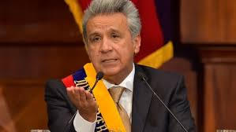
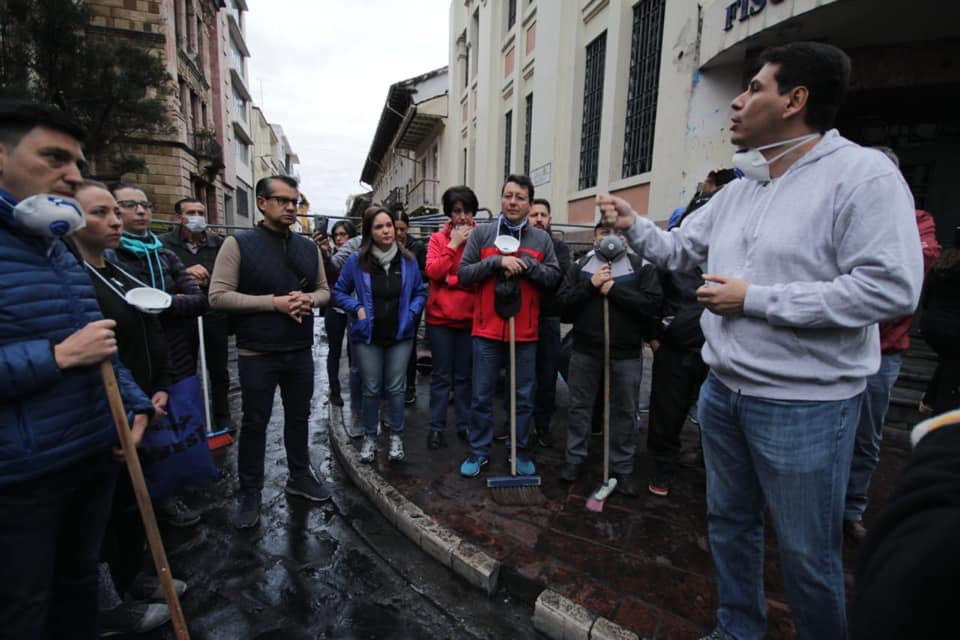
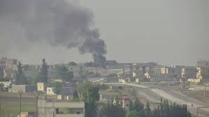
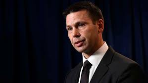
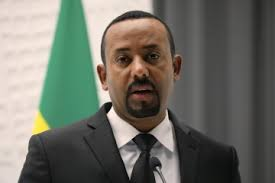

Moreno el martes 1 de octubre anuncio al pais medidas economicas.Lo primero que anuncio es que no
subira el iva ,se mantendra
en el valor del 12%.Ademas de que bajara impuestos con para posibilitar que la economia se dinamice.
Manifesto que aquellas empresas que tinene ingresos con mas de 10 millones al año ,pagaran por
tres años una constribucion especial
que distribuira para educacion,seguridad y salud.
El pais destina mas de 1 300 millones de dolares al año al subsidio al
diesel.En America el unico pais que cuenta con este subsidio
es Venezuela,con esto elimina el subsidio y dijo que esos recursos se van a destinar a salud
,educacion y vivienda.Y añade 300 familias
al millon que reciben bonos.(15 dolares mensuales).
Gobernadores podran hacer controles a comerciantes.
Elimina o reduce aranceles para equipos ,maquinaria y materia prima.
Suprime los impuestos a telefonos celulares ,tablet y computadoras.
Elimina el anticipo de impuesto a la renta.
Reduce a la mitad el impuesto a la divisa de salida de materias primas,insumos y bienes
capitales.
Aumenta 1000 millones de dolares a los creditos hipotecarios.
Bajar el impuesto a los vehiculos de menos de 32 000 dolares.
Contratos con menos de un 20 % de remuneracion.
Vacaciones del sector publico se reduce a 15 dias .
Los trabajadores publicos aportaran con un dia de su salario.
Con estas medidas asegura un futuro prospero para el Ecuador.
Aqui les dejo una tabla de como estarian los precios del subsidio (con y sin):
Temperaturas en Cuenca
Parametros de subsidio a Gasolina
Con Subsidio
Sin Subsidio
Eco Pais (extra con etanol)
1,45
2,53
Super
2,30
3,07
Fuente: EP Petroecuador.
Pronunciamiento del secretario de la Presidencia(Juan Roldan)
El miercoles se pronuncio el ministro Roldan,para reafirmar lo anunciado por el presidente Moreno.
Dijo que esta decision tiene que ver con romper con distorciones que el Ecuador ha mantenido por mas de
40
años ,ya que ningun gobiernos antes habia hecho esto.Los subsidio aclaro que habian sumado millones de
dolares
que estaban beneficiando a quienes no lo necesitaban.Ratifico que estas medidas llevaran a la democracia
y la libertad.
Impacto de las medidas economicas
El pais luego de 48 h de establecidas las medidas.Se han levantado los transportistas ,los estudiantes y
los ciudadanos
a protestar ,a bloquear vias ,a no trabajar .El pais se vio parado en los trabajo ,las universidades
,las fabricas (los empleados
no podian trasladarse),la entrada de alimentos por las vias bloqueadas ,entre muchas mas.Tambien se ha
desatado un conflicto
interno en las provincias contra las fuerzas armadas por estas medidas.
Ademas de las protestas ultimamente protagonizadas por los indigenas del Ecuador ,que exigen un bien
comun.
Pedro Palacios anuncia a Cuenca como estado de emergencia

Debido al paro Nacional ,el alcalde de la capital del Azuay Pedro Palacios declara a Cuenca en
estado de
emergencia ,ya que la ciudad se ha visto muy afectada ,daños tanto en la ciudad ,como en las personas.El
alcalde
pretende poner en marcha planes para resguardar las edificaciones que son patrimonio nacional ,asi como
poder llegar
a un acuerdo son los servicios publicos ,para que funcionen sin ninguna alteracion.
Tambien declara la ayuda brindana por los ciudadanos para limpiar el centro historico de Cuenca.

Turquia mantiene su contra ataque hacia las ciudades fronterizas.Los kurdos(combatientes ) se hacen de
esta situacion,
se ha desarrollado un tanto fuerte en Tel Abyand (una poblacion siria) es a sede de los
principales enfrentamientos.
Ha sido tan grave que en la poblacion de Qamishli ha ocurrido un atentado con coche bomba,(que
supuestamente esto provoco
el estado islamico).Esto ha desencadenado un choque entre Turquia y naciones de Europa.
McAleenan sale de la Seguridad Nacional de los EEUU

El mandatario Donald Trump declara que el secretario McAleenan sale de cargos porque desea pasar mas
tiempo con su familia
y desarrollarse en el sector privado.Trump agradece por sus servicios para EEUU ,por estar en la cabeza
de la politica
migratoria en dicho pais.McAleenan redujo los cruces ilegales a EEUU ,haciendo lazos con otras naciones
para combatir
el trafico de personas.
Ministro etiope ,Premio Nobel de la Paz

Abiy Ahmed fue premiado por su lucha incansable por lograr una paz entre Etiopia y Eritrea ,los cuales
llevaban un
conflicto desde 1990 y que cobro mas de 60 000 vidas.Ahmed tras un tiempo de ser elegido libero a presos
politicos ,
, elimino el estado de emergencia y su mas importante o relevante el de firmar acuerdo de paz con Eritrea.